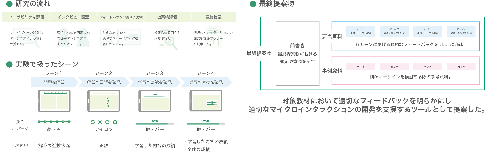

Research
ユーザーエクスペリエンスデザイン
研究室
吉武 良治 教授
よい体験のための商品やサービスを創造し、 デザインする！
現代は「優れた技術や機能の豊富さ」だけでなく、ユーザーが商品やサービスを通じて得る“体験（エクスペリエンス）”「使いやすさや使い心地・満足感、そして使った後の好印象」を重視した取り組みが大切になっています。 ユーザー中心設計（UCD又はHCD）や人間工学の手法を軸に、よりよい体験のためのサービスデザイン、ユーザーインタフェースデザイン等の研究をしています。
-

視線情報によるメンタルモデルの推定
伊藤 拓巳 -
VR,MR の効果的な活用方法の検討
安永 悠里 -

照明による生活の質向上
- シーン・目的に合わせた照明ガイドブックの提案 -
福田 歩美 -

メタバースにおけるアバターの感情伝達向上
- 尻尾の動きを題材として -
三本木 慎太郎 -

学修行動における振り返り体験向上
- 芝浦工業大学の取り組みを事例に -
佐久間 瑞季 -

施設案内表示の意味理解度向上
- 動きのあるピクトグラムの提案 -
丸 千華 -

レトロ商品に感じるストーリーの分類
- 体験価値デザイン手法提案のために -
北城 満理奈 -
大型ディスプレイのジェスチャー操作における操作性の向上
岩田 昂樹 -

エンジニアのためのマイクロインタラクション活用ツールの検討と提案
- 学習支援オンラインサービスを題材に -
小澤 佑花 -
光超音波3Dイメージング装置の撮影用UIの研究
- 人間中心設計プロセスを適用した提案 -
山本 瑛士
-
伊藤 拓巳
視線情報によるメンタルモデルの推定
人は自身の価値観や思い込み、つまりメンタルモデルを参考に行動します。ユーザーのメンタルモデルを推定することで最適なデザインを検討できる一方、既存の推定方法は難易度が高いものとなっています。そこで、推定方法の中でもデータの採取・分析が容易な視線情報に着目し、視線情報から推定可能なメンタルモデルを特定しました。
-
安永 悠里
VR,MR の効果的な活用方法の検討
近年 VR,MR のソフトウェア・サービスは拡大傾向にあり、その市場は年々拡大している。しかし両技術については実用的なレベルでの利用がまだ発展途上であり、明確な効力などについての研究が十分になされていない。また比較的類似する技術であるため混合されて考えられることも多く、それぞれの利点を明確にすることが求められている。
 あなたにとってデザインとは?
あなたにとってデザインとは?
世界を自分が好きなように変えるための手段
-
福田 歩美
照明による生活の質向上
- シーン・目的に合わせた照明ガイドブックの提案 -
照明技術の革新によって設計・活用の選択肢が広がり、照明は単に明るさを提供するだけのものではなく、質的側面の重要性が示されている。本研究では、「照明により人々の生活をより豊かに過ごしやすくすること」を目標に据え、先行研究やいくつかの実験を踏まえた、様々なシーンや目的に適切な照明環境構築のための情報提供を行う。
あなたにとってデザインとは?
想像し得る理想に現実を近づけるために行う、正解のない手段。
-
三本木 慎太郎
メタバースにおけるアバターの感情伝達向上
～ 尻尾の動きを題材として ～
近年、様々な場所でメタバースを利用したアバターによる他者交流が普及し始めている。他者と交流するために表情やジェスチャーを使用して感情表現を行う一方で、表現方法は一方向かつ限定的な方法ばかりである。そのため、アバターの感情表現方法として、新たに尻尾動作を用いた細かい感情表現方法を作成し、感情伝達向上を目指した。
あなたにとってデザインとは?
人をより良いモノ・コトへ導いていく助けとなるもの。
-
佐久間 瑞季
学修行動における振り返り体験向上
- 芝浦工業大学の取り組みを事例に -
近年コロナ禍による学修意欲の低下が問題となり、振り返りの重要性が高まっている。本研究では芝浦工業大学の振り返り支援の取り組みを事例に、大学が求める振り返りの分類と学生の振り返り意欲向上が望めるタイミングや内容について調査し明らかにすることで、大学支援の改善提案と学生目線からの振り返り体験の向上を目指した。
あなたにとってデザインとは?
ユーザーの行動をポジティブに変化させ、生活を豊かにするきっかけをつくること
-
丸 千華
施設案内表示の意味理解度向上
- 動きのあるピクトグラムの提案 -
ピクトグラムにて表している意味の特徴を分析・整理することであり、またその結果から動きの付加が有効なピクトグラムを特定し、効果的な動きのあるピクトグラムを提案すること。動きを付加することで、より暮らしやすい社会の実現を目指す。
あなたにとってデザインとは?
考えたもの・ことを表現すること。
-
北城 満理奈
レトロ商品に感じるストーリーの分類
- 体験価値デザイン手法提案のために -
サービス/プロダクト設計において、体験価値が重要視され、価値提案型のアプローチが求められている。レトロ商品は、機能的に優れていないにも関わらず若者の間で娯楽的に人気であり、その魅力を探ることが良い体験を生むヒントとなると考えた。レトロ商品に感じるストーリーを調査、分類し、ストーリー設計のフレームワークを提案した。
あなたにとってデザインとは?
ユーザーに対する思いやり
-
岩田 昂樹
大型ディスプレイのジェスチャー操作における操作性の向上
大型ディスプレイの入力操作の一つとして、ジェスチャー操作が注目されている。ジェスチャー操作はより快適な操作を実現する為、生産性の向上が求められている。そこで本研究では指差しによるポインティングに焦点を当て、より好適な選択操作として活用するための基礎的なデータ収集を行い、操作性向上を目指した。
あなたにとってデザインとは?
かんがえていることをかたちにすること。
-
小澤 佑花
エンジニアのためのマイクロインタラクション活用ツールの検討と提案
学習支援オンラインサービスを題材に
教育現場ではICT活用教育が推進されている。学習教材の良いUX実現にはマイクロインタラクションなど細かなデザインが重要であるが、開発現場では後回しにされやすく、エンジニアが細かいデザインまで実現することは難しい。本研究では、エンジニアのためのマイクロインタラクションの実現に役立つツールの検討し、提案を目指した。
あなたにとってデザインとは?
みんなが楽しく生きるための手段。
-
山本 瑛士
光超音波3Dイメージング装置の撮影用UIの研究
人間中心設計プロセスを適用した提案
光と超音波を融合した新技術を搭載する画像診断装置の撮影用UIを対象した。臨床現場の現地調査を実施し、課題抽出を行い、利用状況を明らかにした。課題に対するの仮説立てを行い、解決策の有効性を検証するためプロトタイプの作成評価を実施し臨床での装置の利用目的に適したUIデザインを検討した。
あなたにとってデザインとは?
ヒトの現象や社会・環境の現象を捉えて、お互いを融け込ませる行為。
人とつながるきっかけ